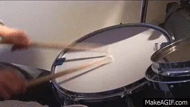
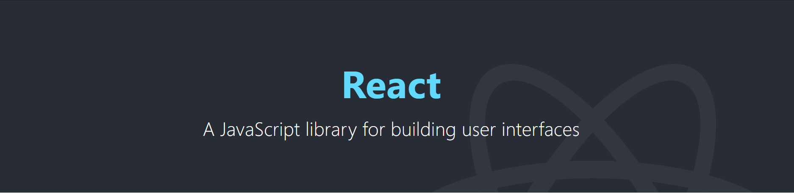
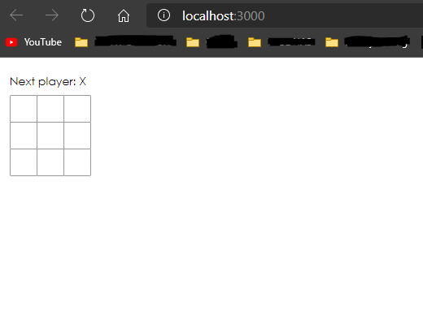
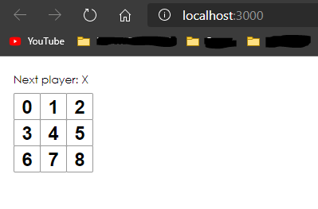

Vertiefungsthema
Nun gut... ich soll ein Thema wählen, welches ich vertiefen möchte. Außerdem soll es einen Bezug zum Thema "Web-Programmierung" haben... verständlich. Aber was nimmt man
da am Besten. Die Auswahl ist ja nicht gerade klein.
Diese Frage hat mich nun eine Weile beschäftigt und ich kam zu dem Schluss, dass ich mir etwas anschauen möchte, dass mich schon länger interessiert.
Und dieses ominöse Thema ist...
 Ja genau, wir schauen uns React an. Denn warum sollte man denn etwas Einfaches zum Erklären nehmen, wenn man auch einfach versuchen kann ein weiteres Framework zu erklären. Und ja, React ist eine Bibliothek/ein Framework. Und ein/-e komplizierte/-s noch dazu. An dieser Stelle lasse ich auch das Wort Framework fallen und verwende von nun an nur noch das Wort Bibliothek (wird sonst zu aufwendig).
Was bitte ist React und was macht das?
Die React Website selbst beschreibt React als eine JavaScript Bibliothek zum Erstellen von komplexen User Interfaces. Es bietet aber noch viel mehr als das. So lassen sich komplette Web Anwendungen darin schreiben und Websites in einzelne, isolierte und wiederverwendbare "Komponenten" unterteilen.
class ShoppingList extends React.Component {
render() {
return (
<div className="shopping-list">
<h1>Shopping List for {this.props.name}</h1>
<ul>
<li>Instagram</li>
<li>WhatsApp</li>
<li>Oculus</li>
</ul>
</div>
);
}
}
// Example usage: <ShoppingList name="Mark" />
Hier sieht man ein Beispiel einer solchen Komponente ShoppingList. Diese ist in hier eine Subklasse von React.Component, aber es gibt noch andere.
Wie genau wird dieses Thema präsentiert?
Ich habe mir bis jetzt schonmal verschiedene Videos zum Thema angeschaut und auch ein Wenig in der Dokumentation von React selbst gelesen. Dabei kam ich zum Schluss, dass es wohl im Rahmen
dieser Vertiefung am Besten wäre etwas Praktisches zu machen. Hier bietet sich das offizielle Tutorial von React geradezu an und so werde ich im Laufe dieser Vertiefung eben jenes durcharbeiten und meine Erkenntnisse
mit dir/Ihnen (je nachdem wer das hier liest) teilen.
So habe ich mehr Spaß, ich kann mehr mit Bildern und Videos Arbeiten (d.h. es wird weniger langweiliger Fließtext) und am Ende kommt sogar etwas Interaktives dabei raus. Was genau das wird, dazu später mehr.
Wie entwickelt man nun React Apps?
React Apps sind im Vergleich zu JQuery basierten Webanwendungen ein Wenig komplizierter aufzusetzen. So genügt es nicht einfach eine JavaScript Datei einzubinden und loszulegen, man muss ein Projekt bauen. Glücklicherweise übernimmt
letzeres zu großen Teilen Node.js (eine JavaScript Runtime).
Aber genug von der Theorie, los geht's mit der Praxis...
Das Projekt
Was entwickeln wir?
Wie bereits erwähnt, hangeln wir uns am offiziellen React Tutorial entlang und so entwickeln wir...
Tic-Tac-Toe
Nicht das spannendste Spiel der Welt, aber immerhin ein Spiel 😁.
Setup
Unter der Vorraussetzung, dass wir Node.js installiert haben (das habe ich natürlich schon im Vorhinein erledigt) können wir auch schon direkt loslegen. Ich nutze Visual Studio Code (kurz: VS Code) für den gesammten Entwicklungsprozess, da es a) mittlerweile so ziemlich die beste kostenlose Entwicklungsumgebung ist und ich b) ohnehin schon damit arbeite. Selbst dieser Text wird gerade darin geschrieben.
Wir erstellen also einen neuen Ordner auf unserer Festplatte (bei mir der unglaublich kreative Name "reactTutorial"), öffnen VS Code, öffnen den Ordner darin und öffnen das Terminal (auf Windows mit strg+shift+ö). Dort schreiben wir "npx create-react-app reacttutorial". Darufhin beginnt Node.js mit der Erstellung unseres Projektes. Das kann einige Zeit dauern also mache ich mir jetzt mal einen Tee.
Das Projekt wirde nun erfolgreich erstellt und wir finden die links im Bild gezeigte Ordnerstruktur vor. Wir löschen die Beispieldateien im src Ordner und ersetzen diese durch unsere eigene index.css für unsere Styles und durch eine index.js für unseren JavaScript Code. Das orangene M neben den neu erstellten Dateien bedeutet im übrigen, dass die von React standardmäßig vorkonfiguerte Git Versionskontrolle funktioniert. VS Code erkennt diese automatisch und trackt Änderungen.

In unsere index.js schreiben wir nun das folgende:
import React from 'react';
import ReactDOM from 'react-dom';
import './index.css';
Dieser Code importiert nun drei wichtige Abhängigkeiten. Die für React wichtigen sowie unserer gerade erst erstellten index.css. Außerdem kopieren wir dort hinein den JavaScript Teil des uns von React gegebenen "Starter Codes" (hier klicken für den CodePen Link.
Dieser beinhaltet aber nicht nur JavaScript Komponenten. Er beinhaltet auch einen vorgefertigten CSS Code und einen vorgefertigten HTML Code, sodass wir am Ende ein Tic-Tac-Toe Gitter erhalten.
Anbei, der HTML Code muss in die von uns bis jetzt noch nicht angerührte index.html im Ordner public. Diese Datei ist die, die von außen her erreichbar ist (wie der Ordner Name public bereits suggeriert). Weil es aber schwierig ist, denn kompletten Inhalt der einzelnen Dateien hier auf die Seite zu packen fasse ich ihn kurz zusammen (allerdings kann man sich den Code auf CodePen [siehe Link weiter oben] anschauen).
- src/index.js: Unsere Ausgangsdatei für React. Der Starter Code enthält bereits die drei Klassen Game, Board (also das Spielbrett) und Square (also ein einzelnes Quadrat). Die Zugriffsreihenfolge sollte relativ selbsterklärend sein. So "erstellt" das Game ein Board und das Board "erstellt" 9 Squares. Zurückgegeben wird anschließend ein komplettes Tic-Tac-Toe Feld mit Hilfe der render Methoden der Klassen.
- src/index.css: Diese Datei ist für das Styling zuständig und sorgt hier dafür, dass unser Spielbrett auch wie eines aussieht und nicht wie 9 wahrlos umhergeschmissene Buttons.
- public/index.html: Diese Datei ist der öffentliche index und erhält durch den Starter Code einen div-Container für Fehlermeldungen, einen div-Container mit der ID root (der Ausgangspunkt für React) und einen script-Tag mit ein paar Event Listenern welche die Eingaben des Users erfassen und uns ermöglichen darauf zu reagieren.
Nachdem wir nun den "Starter Code" erfolgreich in unser Projekt übernommen haben können wir mit "npm start" über das Terminal den Node.js Developement Server starten. Dieser öffnet dann unseren Standardbrowser und wir erhalten das folgende Bild:
Damit ist unser initiales Setup abgeschlossen und wir können nun mit dem eingentlichen Tutorial beginnen.
Erste Erfahrungen mit props
Nun da wir unser Projekt "eingerichtet" haben können wir beginnen damit zu experimentieren. Wir beginnen mit dem Manipulieren von sogenannten props oder auch properties. Dies sind Eigenschaften, die wir in React mit Hilfe von JSX an andere Komponenten übergeben können. Ähnlich wie Parameter bei Methoden.
"Aber Moment mal... was ist JSX?" wird sich der ein oder andere fragen. Nun JSX steht für JavaScript Systax Extension und ist eine Erweiterung der üblichen JavaScript Grammatik für React. Genutzt wird dafür XML was dafür sorgt, dass der Code auch gewisse Ähnlichkeiten mit HTML aufweist. In gewisser Hinsicht wird hier
der Spieß umgedreht. "Normalerweise" wird ja JavaScript in HTML eingebaut. Nun wird HTML in JavaScript eingebaut.
Um die Funktionsweise von Props nun zu veranschaulichen bauen wir unseren Code wie folgt um. Wir ändern die renderSquare-Methode der Board-Klasse und fügen ihr einen prop mit dem Namen "value" hinzu. Dieser übergibt den aktuellen Index eines Squares.
class Board extends React.Component {
renderSquare(i) {
return <Square value={i} />;
}
}
In der Square-Klasse widerrum nutzen wir nun dieses Value und zeigen es auf dem Button an.
class Square extends React.Component {
render() {
return (
<button className="square">
{this.props.value}
</button>
);
}
}
Unsere Squares sind somit nicht mehr leer, sonder zeigen ihren jeweiligen Index an. Das Endresultat sieht dann so aus:
Wir haben also erfolgreich ein Prop von einem Eltern Element zu einem Kind Element weitergegeben. In React werden so Informationen verteilt.
Interaktive Buttons
Jetzt können wir also Zahlen ausgeben. Super spannend...🙄
Wir wollen nun auch etwas anklicken können also beginnen wir doch mal damit, dass ein Square ein "X" erhält wenn wir es anklicken. Dazu fügen wir dem button in der Square-Klasse
erst mal einen OnClick Event Handler hinzu.
class Square extends React.Component {
render() {
return (
<button className="square" onClick={() => alert('click')}>
{this.props.value}
</button>
);
}
}
Aber Moment mal, was macht der Pfeil da drin und wo ist unsere anonyme function? Nun um das kurz aufzuklären, hierbei handelt es sich um sogenannte "Arrow-Functions". Eingeführt wurden sie mit ES6 im Jahr 2015. Diese gab es bereits davor schon in anderen Sprachen (wie beispielsweise C# - daher kenne ich sie). Es handelt sich hier um einen vereinfachten Syntax zum Schreiben von Funktionen. Aufgebaut sind sie dabei immer nach dem gleichen Schema. Erst kommt eine runde Klammer welche die Parameter enthält, dann ein => und dann eine geschweifte Klammer, welche den Funktionscode enthält. Alternativ kann man diese auch benennen indem man ein let funktionsName = davor schreibt. Wen dieses Thema noch weiter interessiert, dem würde ich das Video von Web Dev Simplified empfehlen.
// Beispiel mit Name
let addieren = (a,b) => {
return a+b
};
// Bei simplen Functions kann man die geschweiften Klammen und return auch weglassen
let addierenEinfach = (a,b) => a+b;
Aber genug dazu, zurück zum eigentlichen Code. Wir können nun die Squares anklicken und ein alert-Fenster informiert uns darüber, dass das erfolgreich war. Wie aber speichern wir diesen Klick?
Die Antwort ist im state der Komponente, einer privaten Variable des Squares. Um diese nun zu setzen muss die Komponente erst einmal eine besitzen. Wir fügen also erst einmal einen Konstruktor hinzu der diese Variable für uns deklariert und initialisiert.
class Square extends React.Component {
constructor(props) {
super(props);
this.state = {
value: null,
};
}
// ...
Der super(props) Aufruf meint hier den Konstruktor der Superklasse (hier React.Component). Er muss immer zu erst aufgerufen werden. Danach definieren wir unseren State in JSON. Zu Beginn ist sein Wert null. Abschließend müssen wir nur dafür sorgen, dass ein Klick auf ein Square den State ändert und dieser dann auch angezeigt wird. Dazu gehen wir in die render-Methode zutück und passen diese folgendermaßen an:
class Square extends React.Component {
constructor(props){
super(props);
this.state = {
value: null,
};
}
render() {
return (
// OnClick setzt nun den State
// Der State wird anschließend ausgegeben
<button className="square" onClick={() => this.setState({value: 'X'})}>
{this.state.value}
</button>
);
}
}
Das Ergebnis kann sich schon sehen lassen:
So cool das jetzt schon ist, so schnell muss die Euphorie auch schon wieder weichen. Denn unser Ziel ist ja nicht eine "Zeichenfläche" für Xe sondern ein Tic-Tac-Toe Spiel. Also weiter im Text.
Den Spielstatus zwischenspeichern
Wir wollen jetzt also den aktuellen Status des Spielbrettes irgendwo zwischenspeichern. Dabei haben wir gerade noch ein Problem. Und zwar speichert aktuell jedes Square seinen eigenen Status. Das ist zwar naheliegend, aber nicht wirklich hilfreich wenn wir darauf später weitere Logik aufsetzen lassen wollen. Eine Lösung wäre nun, den Status des Brettes in der Board Klasse zu speichern und diesen durch die Squares updaten zu lassen. Daraufhin würde dann das Board das Square neu rendern.
Wir beginnen nun mit dem Konstruktor des Boards. Wir müssen uns bei Erstelleung des Boards ein Array mit 9 Plätzen erzeugen lassen, dass die Stati speichern kann. Dieses füllen wir anfangs mit nulls.
class Board extends React.Component {
constructor(props) {
super(props);
this.state = {
squares: Array(9).fill(null),
};
}
// ...
Das Array mit 9 Plätzen kann man sich später wie ein "ausgerolltes" 3x3 Feld vorstellen.
Als nächstes müssen wir dafür sorgen, dass das Square auch weiß welchen Status es hat. Wir müssen also bei der Erstellung des Squares den Status mit übergeben.
Das machen wir in der render Methode des Boards (das i ist der index des Squares -> 0 bis 8).
renderSquare(i) {
return <Square value={this.state.squares[i]} />;
}
Jetzt bekommt also jedes Square entweder ein "X", ein "O" oder null (für leere Felder). Eine Sache fehlt allerdings noch. Unser Square weiß jetzt zwar welchen Status es hat, kann daran aber nichts ändern.
Jetzt wird es tricky. Der State des Boards ist privat, weswegen wir vom Square aus keinen Zugriff darauf haben. Auch eine Vererbungsstruktur à la Java mit der Eigenschaft protected lässt sich nicht umsetzen.
Wir übergeben nun deshalb dem Square neben dem Value noch eine Referenz auf eine Funktion handleClick der Board Klasse über den onClick Event Handler. So kann das Square diese ausführen und das Board ändert den State.
// renderSqare Methode des Boards
renderSquare(i) {
return (
<Square
value={this.state.squares[i]}
onClick={() => this.handleClick(i)} // Hier übergeben wir die Referenz
/>
);
}
Innerhalb der Square Klasse müssen wir dann nur dafür sorgen, dass der übergebene Wert angezeigt und der Event Handler an den Button weitergegeben wird.
class Square extends React.Component {
render() {
return (
<button
className="square"
onClick={() => this.props.onClick()}
>
{this.props.value}
<,/button>
);
}
}
Nachdem wir das alles gemacht haben können wir ja schonmal draufklicken oder? ... Nein.
Einen wichtigen Schritt haben wir noch nicht erledigt. Wir müssen die handleClick Funktion noch anlegen. Diese sieht folgendermaßen aus:
handleClick(i) {
const squares = this.state.squares.slice();
squares[i] = 'X';
this.setState({squares: squares});
}
Diese Funktion erstellt eine Kopie (mit der Slice Methode) des aktuellen Board Status, ändert das gewünschte Square zu einem X und setzt den State mit dem modifizierten Status neu.
"Aber Moment mal, warum ändern wir nicht einfach den Status direkt sondern legen eine Kopie an?" fragt man sich bestimmt hier. Die Antwort ist relativ simpel. Wenn man die Objekte, die man ändern will mit einem direkten Zugriff ändert ist das einerseits unübersichtlicher. Andererseits ist es auch schwerer Änderungen zu erkennen, da man nicht ermitteln kann wie das Objekt vorher aussah. Ein weiterer Grund (im Kontext dieses Tutorials) ist auch, dass wir später noch ein weiteres Feature einbauen. Und zwar werden wir später zu vorherigen Zügen zurückspringen können. Dabei hilft uns diese Herangehensweise.
Funktions Komponenten
Zur Zeit haben wir drei Klassen: Game, Board und Square. Allerdings macht unser Square nicht vielmehr als das Ausgeben von HTML unter Einbeziehung von props. Es besitzt keinen eigenen State. Wir können dafür nun ein Funktions Komponente nehmen. Sie erbt nicht von React.Component, sondern besitzt nur eine return Methode. Das sieht dann folgendermaßen aus.
function Square(props) {
return (
<button className="square" onClick={props.onClick}>
{props.value}
</button>
);
}
Neben der Platzerspaarnis, ist die Funktion auch nicht mehr so kompliziert zu nutzen wie die Klasse. So fällt das this. überall weg und auch das onClick Event ist simpler geworden.
Verschiedene "Spieler"
Jetzt geht es aber endlich los mit etwas Spannenderem: Abwechselndes Spielen. Zur Zeit kann man nur Xe setzen. Es wird Zeit für Os. Um das zu verwirklichen brauchen wir zwei Dinge:
- Die Möglichkeit zu tracken wer dran ist und
- die Möglichkeit die Züge entsprechend einzutragen.
Ersteres lässt sich einfach bewerkstelligen. Wir fügen unserem Board State über den Konstruktor einfach eine Varaiable xIsNext hinzu um festzustellen wer dran ist.
class Board extends React.Component {
constructor(props) {
super(props);
this.state = {
squares: Array(9).fill(null),
xIsNext: true,
};
}
Daraufhin müssen wir in der Handle Click Methode berücksichtigen wer dran ist, wenn ein Klick registriert wird. das tun wir hier mit einem Bedingungsoperator, der den Statuswert des Squares abhängig von der Variable xIsNext setzt. Anschließend wird die Variable beim Status setzen negiert.
handleClick(i) {
const squares = this.state.squares.slice();
squares[i] = this.state.xIsNext ? 'X' : 'O';
this.setState({
squares: squares,
xIsNext: !this.state.xIsNext,
});
}
Ob das funktioniert sehen wir gleich. Davor würde ich gerne noch angezeigt bekommen, wer als nächstes dran ist. Dazu bearbeiten wir die die render Methode des Boards. In dieser befindet sich schon eine Konstante mit dem Namen Status. Sie soll nun anzeigen wer als nächstes dran ist. Dazu recyclen wir den Bedingungsoperator von oben und verketten ihn mit dem String "Next Player: " sodass die fertige Methode anschließend so aussieht:
render() {
const status = 'Next player: ' + (this.state.xIsNext ? 'X' : 'O');
return (
<div>
<div className="status">{status}</div>
<div className="board-row">
{this.renderSquare(0)}
{this.renderSquare(1)}
{this.renderSquare(2)}
</div>
<div className="board-row">
{this.renderSquare(3)}
{this.renderSquare(4)}
{this.renderSquare(5)}
</div>
<div className="board-row">
{this.renderSquare(6)}
{this.renderSquare(7)}
{this.renderSquare(8)}
</div>
</div>
);
}
Jetzt können wir doch mal testen, ob bis jetzt alles funktioniert.
Das sieht doch gut aus. Nun fehlt für einen wirklichen Spieldurchlauf nur noch eine Sache: Wir müssen den Gewinner feststellen.
Den Gewinner feststellen
Dazu erstellen wir eine neue "Hilfsfunktion" am Ende unserer JavaScriptt Datei mit dem Namen calculateWinner. Diese beinhaltet ein Array, dass wiederrum alle möglichen Linien zum Gewinnen enthält. Hier sind das 8 - 3 horizontale, 3 vertikale und 2 diagonale. Wir prüfen anschließend mit Hilfe einer for Schleife alle 8 möglichen Linien durch und "schauen" ob es dort nur Symbole eines Typs gibt bzw. ob es dort überhaupt ein Symbol gibt (das machen wir widerrum mit einer if Verzweigung). Diese gibt, falls eine der Möglichkeiten passt, das Symbol des Gewinners zurück.
In Code sieht das folgendermaßen aus:
function calculateWinner(squares) {
const lines = [
[0, 1, 2],
[3, 4, 5],
[6, 7, 8],
[0, 3, 6],
[1, 4, 7],
[2, 5, 8],
[0, 4, 8],
[2, 4, 6],
];
for (let i = 0; i < lines.length; i++) {
// hier weisen wir die Lösungsmöglichkeit einer lokalen Konstante innerhalb der Schleife zu
const [a, b, c] = lines[i];
// Wenn Square a nicht null ist und Square a = Square b und Square a = Square c ist, dann sind sie alle gleich und nicht null
if (squares[a] && squares[a] === squares[b] && squares[a] === squares[c]) {
// Das Symbol des Gewinners zurückgeben
return squares[a];
}
}
// Noch keiner hat gewonnen
return null;
}
Wir haben nun die Möglichkeit einen Gewinner zu bestimmen. Wir müssen sie nur noch einbauen. Das tun wir indem wir in der render Methode des Boards den "aktuellen Gewinner" errechnen lassen und eine if Abfrage einbauen, welche das Ergebnis dieser "Rechnung" auswertet.
render() {
const winner = calculateWinner(this.state.squares);
let status;
if (winner) {
status = 'Winner: ' + winner;
} else {
status = 'Next player: ' + (this.state.xIsNext ? 'X' : 'O');
}
// ...
Anbei: Ich bin mir gerade nicht mehr ganz sicher, ob wir das innerhalb dieser Vorlesung mal angesprochen haben. Zumindest finde im Skript gerade nichts dazu, aber der Grund warum ich hier einfach if (winner) schreiben kann ist, dass in JavaScript alle Variablen mit dem Wert null (oder leere Strings) als false behandelt werden.
Bevor ich nun das finale Spiel zeige muss ich allerdings eine entscheidende Sache noch in Angriff nehmen. So kann ich zur Zeit noch Felder meines Gegners einfach überschreiben und wenn der Gewinner feststeht einfach weiterspielen. Um das zu ändern müssen wir die handleClick Methode noch einmal überarbeiten. Sie soll Klicks nun ignorieren, wenn schon jemand gewonnen hat oder das Feld "schon nicht mehr null ist".
Auch das lässt sich mit einer kleinen if Abfrage bewerkstelligen.
handleClick(i) {
const squares = this.state.squares.slice();
// Hier ist unsere if Abfrage
if (calculateWinner(squares) || squares[i]) {
return;
}
squares[i] = this.state.xIsNext ? 'X' : 'O';
this.setState({
squares: squares,
xIsNext: !this.state.xIsNext,
});
}
Wir haben es geschafft! Das grundlegende Spiel ist fertig!
Und so sieht es nun aus:
Bonusfunktion
Die Grundfunktionlaität des Spiels läuft nun also. Zeit um sich auszuruhen oder? Naja fast. Zur Zeit muss mann, wenn man ein neues Spiel beginnen will die Seite neu laden. Außerdem kann man sich die vorangegangenen Züge nicht anschauen bzw. kann man dahin nicht zurückspringen.
Eben das wollen wir jetzt möglich machen. Dazu müssen wir unseren Code aber noch einmal sehr stark umstrukturieren. Also fangen wir lieber mal an...
Vorherige Schritte zwischenspeichern
Wie bereits oben kurz angeschnitten haben wir unser Squares Array nie direkt manipuliert. Das bietet uns jetzt den Vorteil, dass wir alle vorangegangenen Spielfelder in einem weiteren Array mit dem Namen history ablegen können.
Das mit dem State (schon wieder)
Das mit der History ist schön und gut, nur wollen wir diese (wenn möglich) nicht innerhalb unseres Spielbrettes, sondern über die Game Komponente ausgeben. Dabei haben wir allerdings ein Problem. Der Status des Spielbrettes ist im Board gespeichert. Wir brauchen also mal wieder ein wenig "Refactoring", wie es im Englischen so schön heißt.
First things first, unsere Game Komponente braucht ein history Array (und dazu natürlich dann auch einen eigenen Konstruktor).
class Game extends React.Component {
constructor(props) {
super(props);
this.state = {
history: [{
squares: Array(9).fill(null),
}],
xIsNext: true,
};
}
//...
Wie man sehen kann füllen wir dieses schon einmal mit einem ersten "Backup" unseres State Objekts. Deswegen sind zu den eckigen Klammern zusätzlich noch runde Klammern hier dabei. Es handelt sich um ein Array, welches ein JSON Objekt beinhaltet. Auch beinhaltet der Status hier schon unsere xIsNext Variable, welche wir schon aus der Board Komponente kennen und auch schon einmal signalisiert wo der Weg hingehen wird.
Wir verlagern nun einen Großteil der Logik aus der Board Komponente in die Game Komponente. Dazu ...
- ... löschen wir den Konstruktor des Boards, ...
- ... ersetzen this.state.squares[i] mit this.props.square[i] in der renderSquare Methode des Boards und ...
- ... ersetzen dort auch this.handelClick(i) durch this.props.onClick(i).
Wir verweisen so also nicht mehr auf im Board vorhandene Eigenschaften, sonder auf übergebene props.
Diese props müssen nun aber auch erst mal existieren und so verschieben wir die handleClick Funktion erst einmal von der Board zur Game Klasse. Würden wir die App nun versuchen zu öffnen würden wir mit Fehlermeldungen bombadiert werden (habs probiert, sieht nicht schön aus 😅). Ist aber auch nur logisch, unsere alte handleClick Funktion sucht nach einem squares Array, dass es jetzt natürlich nicht mehr gibt. Wir müssen sie also modifizierten um immer das aktuellste/letzte Element der history als aktuellen Status zu "verstehen".
Dazu holen wir uns das letzte Element des history Arrays als Konstante current und packen mit der slice Funktion eine Kopie in unsere lokale Variable squares, mit welcher handle Click arbeiten kann.
Abschließend müssen wir nur noch dafür sorgen, dass der Status "richtig" neu gesetzt wird. Wir verwenden hier die concat Funktion und füge unseren neuen Status an das ursprüngliche history Array an. Das Ergebnis setzen wir als neues history Array fest.
handleClick(i) {
// Unsere Aktuelle History
const history = this.state.history;
// Das letzte Element des Arrays
const current = history[history.length - 1];
// Wir legen eine Kopie des letzten Elementes an und nennen es squares
const squares = current.squares.slice();
if (calculateWinner(squares) || squares[i]) {
return;
}
squares[i] = this.state.xIsNext ? 'X' : 'O';
this.setState({
// Anfügen des neuen Status an die History
history: history.concat([{
squares: squares,
}]),
xIsNext: !this.state.xIsNext,
});
}
Als letztes in unserer großen "Funktionen Wanderschafft" wird nun auch das Anzeigen des Status ins Game hochgezogen und die Übergabe der neu erstellten Funktionen an das Board geregelt.
All das machen wir (große Überraschung) in der render Methode der Game Komponente. Dort implementieren wir eine ähnliche Selektion des aktuellen Spielbrettes wie in der handleClick Methode. Die anschließende Bestimmung, ob es einen Sieger gibt bleibt nahezu gleich.
render() {
const history = this.state.history;
const current = history[history.length - 1];
const winner = calculateWinner(current.squares);
let status;
if (winner) {
status = 'Winner: ' + winner;
} else {
status = 'Next player: ' + (this.state.xIsNext ? 'X' : 'O');
}
return (
<div className="game">
<div className="game-board">
<Board
squares={current.squares}
onClick={(i) => this.handleClick(i)}
/>
</div>
<div className="game-info">
<div>{status}</div>
<ol>{/* TODO */}</ol>
</div>
</div>
);
}
Wie man sehen kann, übergeben wir nun auch das aktuelle Spielbrett und die handleClick Methode der Game Komponente an das Board.
Zum "Aufräumen" können wir abschließend noch den Code zum Anzeigen des Status aus der render Methode des Boards entfernen. Dieser wird ja nun über die render Methode des Games ausgegeben.
Die vergangenen Züge auch anzeigen
Das Spiel funktioniert nun äußerlich wieder wie vorher. Das ist zwar schön und gut, aber nicht unser Ziel. Wir speichern nun im Hintergrund jeden Zug in unserem history Array ab. Der nächste Schritt ist es diese Züge auch sichtbar zu machen.
Wir müssen uns also eine Liste aller vorangegangenen Züge ausgeben lassen und diese Klickbar gestalten. Dazu nutzen wir die map Methode auf unserem history Array.
const moves = history.map((step, move) => {
const desc = move ?
'Go to move #' + move :
'Go to game start';
return (
<li>
<button onClick={() => this.jumpTo(move)}>{desc}</button>
</li>
);
});
Die Erstellung der Listen Elemente ist eigentlich ziemlich selbsterklärend. Die Verwendung der Map Methode allerdings erschloss sich mir anfangs nicht. Ein kurzer Ausflug zu Google später hat die Verwirrung jedoch beheben können. Und zwar wird die Map Methode auf Arrays aufgerufen und kann diese beliebig verändern um so ein neues Array auszugeben. Dazu akzeptiert sie, wie bei uns, Funktionen. In diesem Fall unsere Arrow Funktion, die aus jedem Element ein Listen Element erstellt. Als Übergabe Parameter an diese Funktion werden außerdem "currentValue", "index" und "arr" (das Array auf dem wir arbeiten) angeboten. Wir nutzen davon zwei. Wir übergeben den Inhalt des Elementes (also unsere Squares) als step und den Index des Schrittes als move.
Nachdem ich mir das bewusst gemacht hatte, sah das plötzlich alles auch nicht mehr so kompliziert aus. Wir fügen nun noch {moves} in die geordnete Liste in den return der render Methode ein um unsere Liste auch für den Nutzer sichtbar zu machen.
return (
<div className="game">
<div className="game-board">
<Board
squares={current.squares}
onClick={(i) => this.handleClick(i)}
/>
</div>
<div className="game-info">
<div>{status}</div>
<ol>{moves}</ol>
</div>
</div>
);
Wie vielleicht dem ein oder anderen aufegfallen ist, rufen wir mit den Buttons die Funktion jumpTo auf. Da wir diese Funktion in der Game Komponente noch nicht haben sollte das unser nächster Schritt sein oder?
Und wie immer wenn ich so frage ist die Antwort nein.
Wir müssen uns erst einem anderen "Problem" annehmen.
Listenelemente innerhalb von React benötigen immer einen eindeutigen Schlüssel. Das hat vor allem den Grund, dass React für uns automatisch das aktualisieren von Komponenten übernimmt (deswegen mussten wir bis jetzt auch keine Update Funktionen oder ähnliches schreiben). Damit es aber Änderungen effizient und richtig erkennen kann braucht es eindeutige Schlüssel. Hierzu gibt es zwar auch Plugins für Ract (beispielsweise UUID) aber in unserem Beispiel machen wir uns das ganze etwas einfacher. Wir weisen dem Listenelement einfach den Array Index als Schlüssel zu.
const moves = history.map((step, move) => {
const desc = move ?
'Go to move #' + move :
'Go to game start';
return (
// Hier kommt unser Schlüssel dazu
<li key={move}>
<button onClick={() => this.jumpTo(move)}>{desc}</button>
</li>
);
});
Jetzt da das aus dem Weg ist können wir das Springen zu verschiedenen Schritten implementieren.
Dazu brauchen wir folgendes:
- Wir müssen wissen, bei welchem Schritt wir gerade sind, ...
- ... wir brauchen unsere jumpTo Methode, ...
- ... ein Weiterspielen "in der Vergangenheit" löscht die alte Zukunft und ...
- ... die render Methode des Game muss uns immer den Status des Bretts beim aktuellen Schritt anzeigen.
Wir fangen also mit 1. an. Dazu fügen wir dem state im Konstruktor der Game Komponente die Varible stepNumber hinzu und setzen sie dort auf 0 (wir haben ja am Anfang noch keinen Zug gemacht).
Nummer 1 - check.
Danach erstellen wir die jumpTo Methode. Diese akzeptiert den Parameter step und setzt den Status des Spiels auf den aktuellen Step. Außerdem nutzen wir Modulo 2 um zu überprüfen, ob der Schritt zu dem wir springen wollen gerade ist. Wenn ja, ergibt die Auswertung true. Diesen Wert schreiben wir dann in xIsNext. Das macht deshalb Sinn, da X anfängt und somit immer bei geraden Schritten dran ist.
jumpTo(step) {
this.setState({
stepNumber: step,
xIsNext: (step % 2) === 0,
});
}
Nummer 2 - check.
Jetzt wollen wir, dass ein Klick innerhalb der Vergangenheit die alte Zukunft löscht. Wir verlieren also alle nach dem ausgewählten Schritt gemachte Züge, wenn wir von dort aus auf die Squares klicken. Das geht relativ einfach indem wir uns noch einmal an die handleClick Methode setzen.
Diese greift sich in der aktuellen Version einfach das history Array und wählt das letzte Element als aktuelles aus. Was wir nun machen müssen ist dafür zu sorgen, dass das History Array nur bis zum aktuell betrachtetem Schritt ausgewählt und in die Konstante history geschrieben wird.
Das erreichen wir mit der slice Methode. Diese akzeptiert in einer ihrer Abwandlungen zwei Parameter - den Start und End Index. Der Befehl sieht also anschließend so aus:
const history = this.state.history.slice(0, this.state.stepNumber + 1);
Natürlich müssen wir den neuen Schritt am Ende der handleClick Methode auch wieder an den Status zurückgeben.
this.setState({
history: history.concat([{
squares: squares
}]),
// Wir nutzen hier die Länge des history Arrays
stepNumber: history.length,
xIsNext: !this.state.xIsNext,
});
Nummer 3 - check.
Die Hintergrundarbeiten sind nun abgeschlossen. Jetzt muss uns das Brett aber auch den aktuell ausgewählten Schritt anzeigen. Das passiert in der render Methode der Game Komponente wenn wir das aktuelle Spielbrett auswählen. Wir tauschen hier history.length-1 gegen this.state.stepNumber aus.
render() {
const history = this.state.history;
// Aktuellen Schritt anzeigen
const current = history[this.state.stepNumber];
const winner = calculateWinner(current.squares);
// ...
Nummer 4 - check.
Die Bonusfunktion ist fertig
Nun ist das "Zeitreisen" fertig implementiert und wir können es testen.
Fazit
Alles in allem ist React eine vielseitige wenn auch am Anfang etwas verwirrende Bibliothek. Eines ist klar. Es ist nich so einfach einzubauen wie JQuery. Man benötigt einen Node.js Server und muss ein Projekt erstellen. Wenn man sich aber einmal dort hindurch gekämpft hat, ist es relativ verständlich und lässt sich ähnlich zu JQurey noch mit weiteren Modulen (in JQuery Plugins) ergänzen. Ich habe allerding bis jetzt erst einen ungefähren Eindruck von dem erhalten, was man mit React umsetzen kann (so zumindest mein Gefühl). Nur gut, dass ich im neuen Jahr noch Resturlaub abbauen muss. Dann kann man sich das noch einmal genauer anschauen 😅.
PS: Den fertigen Quellcode findet man hier. Dies ist der vollständige Code aus dem Tutorial, aber da ich dieses befolgt habe ist der Code bis auf wenige stilistische Feinheiten (z.B. Einrückungen) identisch.